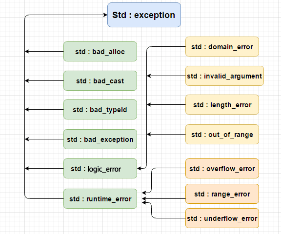

C++ Exception Handling
Exceptions are problems that arise during program execution. C++ exceptions refer to special situations that occur at runtime, such as an attempt to divide by zero.
Exceptions provide a way to transfer program control. C++ exception handling involves three keywords:try、catch、throw。
- throw:When a problem arises, the program throws an exception. This is done by usingthrowIt is accomplished using keywords.
- catch:Where you want to handle the problem, catch the exception through an exception handler.catchThe keyword is used to catch exceptions.
- try: tryThe code in a block identifies the specific exception that will be activated. It is usually followed by one or more catch blocks.
If a block throws an exception, the method used to catch the exception employs thetryandcatchkeyword. Code that may throw an exception is placed in a try block, and the code inside the try block is called protected code. The syntax for using a try/catch statement is as follows:
iftryBlocks may throw different exceptions in different contexts; in this case, you can try to list multiplecatchstatement, used to catch different types of exceptions.
Throw an exception
You can usethrowThe statement throws an exception anywhere in the code block. The operand of the throw statement can be any expression, and the type of the result of the expression determines the type of the thrown exception.
Below is an example of throwing an exception when attempting to divide by zero:
Catch exceptions
catchblock followstryplaced after the block, used to catch exceptions. You can specify the type of exception you want to catch, which is determined by the exception declaration in parentheses after the catch keyword.
The above code will catch an exception of typeExceptionNameexception. If you want a catch block to handle any type of exception thrown by a try block, you must use an ellipsis ... inside the parentheses of the exception declaration, as shown below:
Here is an example that throws a divide-by-zero exception and catches it in the catch block.
Example
Since we threw an exception of typeconst char*exception, so when catching this exception, we must use const char* in the catch block. When the above code is compiled and executed, it produces the following results:
Division by zero condition!
C++ standard exceptions
C++ provides a series of standard exceptions, defined in<exception>which we can use in programs. They are organized as a parent-child class hierarchy, as shown below:

The following table describes each exception appearing in the hierarchy above:
| Exception | Description |
|---|---|
| std::exception | This exception is the parent class of all standard C++ exceptions. |
| std::bad_alloc | This exception can pass throughnewThrow. |
| std::bad_cast | This exception can pass throughdynamic_castThrow. |
| std::bad_typeid | This exception can pass throughtypeidThrow. |
| std::bad_exception | This is very useful when handling exceptions that cannot be anticipated in a C++ program. |
| std::logic_error | Exceptions that can theoretically be detected by reading the code. |
| std::domain_error | This exception is thrown when an invalid mathematical domain is used. |
| std::invalid_argument | This exception is thrown when an invalid argument is used. |
| std::length_error | This exception is thrown when a std::string that is too long is created. |
| std::out_of_range | This exception can be thrown by methods, such as std::vector and std::bitset<>::operator[](). |
| std::runtime_error | Exceptions that theoretically cannot be detected by reading the code. |
| std::overflow_error | This exception is thrown when a mathematical overflow occurs. |
| std::range_error | This exception is thrown when attempting to store a value out of range. |
| std::underflow_error | This exception is thrown when a mathematical underflow occurs. |
Define new exceptions
You can define new exceptions by inheriting and overloading theexceptionclass. The following example demonstrates how to use the std::exception class to implement your own exceptions:
Example
This will produce the following result:
MyException caught C++ Exception
Here,what()is a public method provided by the exception class, which has been overridden by all derived exception classes. It returns the cause of the exception.
other extensions